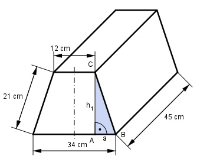

Aufgabe 55 Berechnen Sie das Volumen V und die Oberfläche O des dargestellten Prismas.  Es ist ein Prisma mit einem Trapez als Grundfläche G. V = G * h Wegen Symmetrie: 34 cm – 12 cm a = --------------- = 11 cm 2 Satz von Pythagoras im Dreieck ABC: 21² = a² + h1² 21² = 11² + h1² |-11² 21² - 11² = h1² h1² = 320 |√ h1 = 17,9 cm 34 cm + 12 cm G = ---------------- * 17,9 cm = 411,7 cm² 2 V = 411,7 cm² * 45 cm = 18 526,5 cm³ = 18,5 dm³ O = 2 * G + M = 2 * G + U * h O = 2 * 411,7 cm² + (34 cm + 2 * 21 cm + 12 cm) * 45 cm O = 823,4 cm² + 3 960 cm² = 4 783,4 cm² = 47,8 dm²